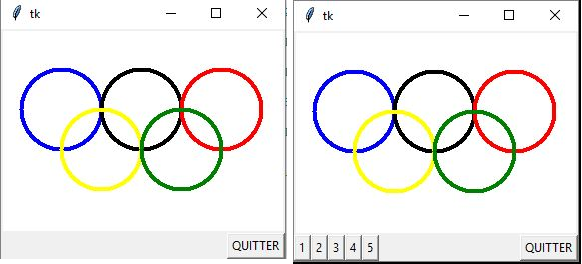

Interface Graphique TKinter (Tool Kit Interface)⚓︎
Tkinter est UNE des nombreuses interfaces graphiques de python parmi d'autre. Étant une des plus simple à utiliser, elle permet des interfaces graphiques simples même quand on est débutant.
Dans cette partie, les applications seront à faire au fur et à mesure pour bien intégrer chaque notion avant de progresser. Veillez à chaque modification de programme à l'enregistrer sous un autre nom afin de ne pas écraser le précédent.
Ressources complémentaires :
Tableauxmaths : Boutons et zones de textes
Tableauxmaths : dessiner déplacer et gérer les collisions
Dessiner⚓︎
Prise en main⚓︎
Création d'une fenêtre avec deux widgets (contraction de window gadget) : un bout de texte (label) et un bouton (button).
Écrire, sauvegarder et exécuter le script suivant :
 vous devriez obtenir l'ouverture d'une fenêtre popup telle que:
vous devriez obtenir l'ouverture d'une fenêtre popup telle que:

fen1=tk() crée la fenêtre qui s'appellera fen1.
tex1=Label(fen1, text='Bonjour tout le monde !', fg='red') : le premier argument est le nom de la fenêtre dans lequel sera le bouton (fen1 est le widget maître de l'objet tex1, ou l'objet tex1 est un widget esclave de l'objet fen1). Le deuxième est facile à comprendre et le troisième est la couleur d'avant plan (foreground, en anglais).
tex1.pack() : nous activons ici la méthode pack() à l'objet tex1. Cette méthode agit sur la disposition géométrique, la fenêtre maître est réduite automatiquement pour qu'elle soit juste assez grande pour contenir les widgets esclaves.
fen1.mainloop() : c'est cette ligne qui provoque le démarrage du réceptionnaire d'événements associé à la fenêtre. Cette instruction est nécessaire pour que l'application soit « à l'affût » des clics de souris, des pressions exercées sur les touches du clavier, etc. C'est donc cette instruction qui la met en marche.
La notion d'évènements⚓︎
La notion d’événements est commune à tous les langages informatiques. Il s'agit des clics sur les boutons de souris, sur les touches du clavier ou sur l'interface créée. Il sera alors toujours nécessaire d'avoir un écouteur d’événement et des fonctions associées à chaque événement qui nous intéressera.
Par exemple, on pourra associer une fonction qui permet de quitter l'interface à une frappe sur la touche "q" du clavier.
Tracé de lignes⚓︎
Écrire, sauvegarder et exécuter le script suivant :
1 2 3 4 5 6 7 8 9 10 11 12 13 14 15 16 17 18 19 20 21 22 23 24 25 26 27 28 29 30 31 32 33 34 35 36 37 38 | |

Un canevas dans tkinter est une surface rectangulaire délimitée, dans laquelle on peut installer ensuite divers dessins et images à l'aide de méthodes spécifiques (canevas s'écrit canvas en anglais !).
La fonctionnalité de ce programme est assurée essentiellement par les deux fonctions drawline() et changecolor().
Dans la fonction changecolor(), une couleur est choisie au hasard dans une liste, à l'aide de la fonction randrange() importée du module random. Appelée avec un argument N, cette fonction renvoie un nombre entier, tiré au hasard entre zéro et N-1.
La commande liée au bouton « Quitter » appelle la méthode quit( ) de la fenêtre fen1.
Cette méthode sert à fermer le réceptionnaire d'événements (mainloop) associé à cette fenêtre. Lorsque cette méthode est activée, l'exécution du programme se poursuit avec les instructions qui suivent l'appel de mainloop. Dans l'exemple, cela consiste donc à effacer (destroy) la fenêtre.
Exercices⚓︎
- Modifier le programme pour ne plus avoir que des lignes de couleur cyan, maroon et green.
- Modifier le programme pour que toutes les lignes tracées soient horizontales et parallèles.
- Agrandir le canevas de manière à lui donner une largeur de 500 unités et une hauteur de 650. Modifier également la taille des lignes, afin que leurs extrémités se confondent avec les bords du canevas.
- Ajouter une fonction
drawline2( )qui tracera deux ligne rouges en croix au centre du canevas : l'une horizontale et l'autre verticale. Ajouter également un bouton portant l'indication « viseur ». Un clic sur ce bouton devra provoquer l'affichage de la croix. - Reprendre le programme initial. Remplacer la méthode
create_linepar la méthodecreate_rectangle. Que se passe-t-il ? Qu'indique les coordonnées fournies en paramètres ? (Noter ses informations dans un endroit où vous les retrouverez facilement - Recommencer en remplaçant cette fois par
create_oval. Que se passe-t-il et qu'indique les coordonnées fournies en paramètres ? - Créer un programme qui dessinera les cinq anneaux olympiques dans un rectangle de fond blanc (white). Utiliser l'argument outline à la place de fill pour la couleur des anneaux. Un bouton « quitter » doit permettre de fermer la fenêtre. 
- Modifier le programme précédent en y ajoutant cinq boutons. Chacun de ces boutons provoquera le tracé d'un anneau.
Deux dessins alternés⚓︎
Écrire, sauvegarder et exécuter le script suivant :
1 2 3 4 5 6 7 8 9 10 11 12 13 14 15 16 17 18 19 20 21 22 23 24 25 26 27 28 29 30 31 32 33 34 35 36 37 38 39 40 41 42 43 44 45 46 47 48 | |

L'option side peut accepter les valeurs TOP, BOTTOM, LEFT ou RIGHT, pour « pousser » le widget du côté correspondant de la fenêtre.
Les options padx et pady permettent de réserver un petit espace autour du widget. Cet espace est exprimé en nombre de pixels : padx réserve un espace à gauche et à droite du widget, pady réserve un espace au- dessus et au-dessous du widget.
Prenez le temps d'essayer de bien comprendre ce programme.
Exercices :⚓︎
Écrire une application qui dessine un damier (carrés 'navy' sur fond blanc), ainsi que des pions rouges qui apparaissent au hasard lorsque que l'on clique sur un bouton dans un premier temps, on se contentera du damier).
Le canevas devra avoir une dimension de 300*300. Les carrés devront avoir un côté égal à 30.
Les pions devront avoir un rayon égal à 10.
Le programme comportera les fonctions suivantes :
damier(): donnée ci-dessous
ligne_de_carres(x, y): dessine une ligne de 5 carrés de couleur 'navy' espacés, en partant de (x,y).
disque(x, y, r, coul) : dessine un disque de centre (x,y), de rayon r et de couleur coul.
pion( ): dessine un pion au hasard sur le damier (utilisera la fonction disque).


Les entrées au clavier : la calculatrice⚓︎
Écrire, sauvegarder et exécuter le script suivant :
1 2 3 4 5 6 7 8 9 10 11 12 13 14 15 | |
La fonction
evaluer() sera la commande exécutée par le programme lorsque l'utilisateur actionnera la touche Return.Cette fonction utilise la méthode
configure( ) du widget chaine, pour modifier son attribut text.eval( ) évalue (fait le calcul) la chaîne de caractères.str( ) transforme une expression numérique en chaîne de caractères.get( ) est une méthode qui permet d'extraire du widget entree la chaîne de caractères qui lui a été fournie par l'utilisateur.entree est un widget de la « classe »
Entry. Afin que ce widget puisse transmettre au programme l'expression que l'utilisateur y aura encodée, il faut lui associer un événement à l'aide de la méthode bind()(bind signifie « lier » en anglais).entree.bind("<Return>", evaluer) signifie : « lier l'événement 'pression sur la touche <Return>' à l'objet entree, le gestionnaire de cet événement étant la fonction evaluer ».L'argument event fourni à la fonction évaluer est obligatoire dès que l'on utilise la méthode
bind().
Détection du clic de souris⚓︎
Écrire, sauvegarder et exécuter le script suivant :
1 2 3 4 5 6 7 8 9 10 11 12 13 | |
 Le script fait apparaître une fenêtre contenant un cadre (frame) rectangulaire de couleur jaune pâle.
Le script fait apparaître une fenêtre contenant un cadre (frame) rectangulaire de couleur jaune pâle.La méthode
bind() du widget cadre associe l'événement clic à l'aide du premier bouton de la souris> au gestionnaire d'événement « pointeur ». Ce gestionnaire d'événement peut utiliser les attributs x et y de l'objet event généré automatiquement par Python, pour construire la chaîne de caractères qu' affichera la position de la souris au moment du clic.
Exercices :⚓︎
Modifier le script ci-dessus de manière à faire apparaître un petit cercle rouge à l'endroit où l'utilisateur a effectué son clic (il faut d'abord remplacer le widget Frame par un widget Canvas).

Widgets et positionnement dans le Canevas⚓︎
Classe de widget(windows+gadget)⚓︎
Il existe 15 classes de base pour les widgets Tkinter :
Button : Un bouton classi
Canvas: Un espace pour disposer divers éléments graphiques. Ce widget peut être utilisé pour dessiner, créer des éditeurs graphiques, et aussi pour implémenter des widgets personnalisés.
Checkbutton : Une « case à cocher » qui peut prendre deux états distincts (la case est cochée ou non). Un clic sur ce widget provoque le changement d'état.
Entry : Un champ d'entrée, dans lequel l'utilisateur du programme pourra insérer un texte quelconque à partir du clavier.
Frame : Une surface rectangulaire dans la fenêtre, où l'on peut disposer d'autres widgets. Cette surface peut être colorée. Elle peut aussi être décorée d'une bordure.
Label: Un texte (ou libellé) quelconque (éventuellement une image).
Listbox : Une liste de choix proposés à l'utilisateur, généralement présentés dans une sorte de boîte. On peut également configurer la Listbox de telle manière qu'elle se comporte comme une série de « boutons radio » ou de cases à cocher.
Menu : Un menu. Ce peut être un menu déroulant attaché à la barre de titre, ou bien un menu « pop up » apparaissant n'importe où à la suite d'un clic.
Menubutton : Un bouton-menu, à utiliser pour implémenter des menus déroulants.
Message : Permet d'afficher un texte. Ce widget est une variante du widget Label, qui permet d'adapter automatiquement le texte affiché à une certaine taille ou à un certain rapport largeur/hauteur.
Radiobutton : Représente (par un point noir dans un petit cercle) une des valeurs d'une variable qui peut en posséder plusieurs. Cliquer sur un « bouton radio » donne la valeur correspondante à la variable, et "vide" tous les autres boutons radio associés à la même variable.
Scale : Vous permet de faire varier de manière très visuelle la valeur d'une variable, en déplaçant un curseur le long d'une règle.
Scrollbar : « ascenseur » ou « barre de défilement » que vous pouvez utiliser en association avec les autres widgets : Canvas, Entry, Listbox, Text.
Text: Affichage de texte formaté. Permet aussi à l'utilisateur d'éditer le texte affiché. Des images peuvent également être insérées.
Toplevel : Une fenêtre affichée séparément, « par-dessus ».
Ces classes de widgets intègrent chacune un grand nombre de méthodes. On peut aussi leur associer (lier) des événements, comme déjà vu dans les pages précédentes. Tous ces widgets peuvent être positionnés dans les fenêtres à l'aide de trois méthodes différentes : la méthode grid( ), la méthode pack( ) et d'autres encore...
Liste des méthodes communes à tous les widgets
Méthode grid() pour le positionnement des widgets⚓︎
Recopier, sauvegarder et exécuter le script suivant :
1 2 3 4 5 6 7 8 9 10 11 12 13 14 | |
 La méthode
La méthode grid() considère la fenêtre comme un tableau, avec des lignes (row) et des colonnes (column).Il est possible d'aligner les widgets avec l'option
sticky qui peut prendre l'une des quatre valeurs N, S, E, W (les quatre points cardinaux en anglais).
Exercices :⚓︎
-
Remplacer les deux premières instructions
grid( )du script par :
txt1.grid(row=0, sticky=E) txt2.grid(row=1, sticky=E) -
Le but de cet exercice est d'obtenir la fenêtre ci-dessous :
 voici le fichier image à utiliser (cliquer sur le lien pour télécharger) Image anneaux
Le programme comportera entre autres, les parties suivantes :
voici le fichier image à utiliser (cliquer sur le lien pour télécharger) Image anneaux
Le programme comportera entre autres, les parties suivantes :
 Tkinter ne permet pas d'insérer directement une image dans une fenêtre. Il faut d'abord installer un canevas, et ensuite positionner l'image dans celui-ci, grâce à l'instruction
Tkinter ne permet pas d'insérer directement une image dans une fenêtre. Il faut d'abord installer un canevas, et ensuite positionner l'image dans celui-ci, grâce à l'instruction item=can1.create_image(160, 80, image=anneaux).
{kind=link}
Les deux premiers arguments transmis (160,80) indiquent les coordonnées x et y du canevas où il faut placer le centre de l'image (ici, l'image sera donc centrée dans le canevas).
L'instruction rowspan=3 indique que le canevas pourra « s'étaler » sur trois lignes. padx et pady indiquent la dimension de l'espace à réserver autour du canevas.
Animations : déplacer les objets⚓︎
Modifier les propriétés d'un objet (animation)⚓︎
Recopier, sauvegarder et exécuter le script suivant :
1 2 3 4 5 6 7 8 9 10 11 12 13 14 15 16 17 18 19 20 21 22 23 24 25 26 27 28 29 30 31 32 33 34 35 36 37 38 | |
avance( ) redéfinit les coordonnées de l'objet « cercle coloré » (oval1) à chaque fois que l'on clique sur un des boutons. Ce qui provoque son animation.Les boutons ont été définis de manière plus compact (pas d'utilisation de variables).
Exercices :⚓︎
-
Modifier le programme précédent de manière à ce que le cercle oval1 se place à l'endroit où l'on clique avec la souris.
-
Écrire un programme qui fasse apparaître une fenêtre avec un canevas (100*150). Dans ce canevas, placer un petit cercle (de rayon 15) censé représenter une balle. Sous le canevas, placer un bouton. Chaque fois que l'on clique sur le bouton, la balle doit avancer d'une petite distance (10) vers la droite, jusqu'à ce qu'elle atteigne l'extrémité du canevas. Si l'on continue à cliquer, la balle doit alors revenir en arrière jusqu'à l'autre extrémité, et ainsi de suite.
-
Écrire un programme qui fasse la conversion des degrés Celsius vers les degrés Fahrenheit en tapant la touche Return, et vice-versa. On utilisera la formule : TF =TC ×1,8+32 .
Vous aurez besoin de la méthodeget( )du widgetEntry(voir la calculatrice), ainsi que des méthodesdelete(0,END)pour effacer un champ du début à la fin, etinsert(0,text)pour insérer le texte text à partir du début du champ.

Animations automatiques⚓︎
Recopier, sauvegarder et exécuter le script suivant :
1 2 3 4 5 6 7 8 9 10 11 12 13 14 15 16 17 18 19 20 21 22 23 24 25 26 27 28 29 30 31 32 33 34 35 36 37 38 39 40 41 42 43 44 45 46 47 48 49 50 51 | |
after() déclenche l'appel d'une fonction après qu'un certain laps de temps se soit écoulé (temps en millisecondes).Ici la méthode
after( ) se trouve dans la fonction move( ). Elle appelle la fonction move( ) elle-même. Cette technique de programmation très puissante est appelée « récursivité » : la fonction s'appelle elle-même. Attention, pour que le programme ne boucle pas indéfiniment, il faut mettre en place un moyen pour l'interrompre.À chaque itération de la boucle, le contenu de la variable
flag est testé (instruction if). Si le contenu de la variable flag est à 0, alors le bouclage ne s'effectue plus et l'animation s'arrête.Un premier clic sur « Démarrer » assigne une valeur non nulle à la variable
flag, puis provoque immédiatement un appel de la fonction move(). Celle-ci s'exécute et continue à s'appeler elle-même toutes les 50 millisecondes, tant queflag ne revient pas à 0. Si l'on continue à cliquer sur le bouton
« Démarrer », la fonction move() ne peut plus être appelée tant que flag vaut 1. On évite ainsi le démarrage de plusieurs boucles concurrentes.Le bouton « Arrêter » remet
flag à 0 et la boucle s'interrompt.
Exercices :⚓︎
Dans la fonction start_it( ), supprimer l'instruction if flag==0: (et l'indentation des deux lignes suivantes). Cliquer plusieurs fois sur le bouton « Démarrer ». Observer ce qui se passe Modifier le programme de telle façon que la balle change de couleur à chaque « virage ».
Vous aurez besoin de l'instruction : can1.itemconfigure(oval1,fill='green')
Minis projets⚓︎
Travaux de groupe
Les groupes sont imposés, vous rendrez un seul projet et aurez tous la même note.
- DISCUTEZ ENTRE VOUS !!
- Répartissez vous le travail en vous mettant d'accord à l'avance sur le nom des fonctions, des variables, des fichiers, ...
- Prévoyez à l'avance, qui fait quoi, où vous vous arrêtez
- Lister TOUTES les fonctionnalités du programme
- Ne travaillez pas à plusieurs en parallèle sur le même fichier
PacMan⚓︎
Vous allez réaliser une version simplifiée de PacMan.
Voici une petite démonstration.
Les objectifs minimums
- créer un rond jaune (30px de diametre) que l'on peut déplacer avec des flèches dans un canevas de 900 par 300.
- Placer 10 rectangles blancs (fantomes de 1px de large et 20 de haut) de façon aléatoire.
- Placer 50 pac-gommes (cercles noirs de rayon 5 px) de façon aléatoire.
- Quand pac-man touche une pac-gomme, elle disparait et le score augment de 1
- Quand pac-man touche un fantome, il perd une vie et revient à l'emplacement du début (sans remettre les pac-gomme déjà mangées et sans réinitialiser le score)
- Le jeu se termine lorsque Pac-man a mangé toutes les pac-gomme ou qu'il a perdu 3 vies
!! info "Niveau intermédiaire :"
1 | |
Niveau avancé :
- Placer tout ce petit monde dans un labyrinthe.
- Ajouter de la musique
...
Au minimum vous devez obtenir ceci :

Conseils
Les fantômes peuvent être gérés par une liste.
Utiliser les morceaux de code vus en activité.
Attention aux nombreux codes que vous trouverez sur internet que vous ne sauriez ni expliquer ni utiliser (notamment ceux réalisés en programmation orienté objet).
Faites simple mais efficace
Répertoire téléphonique⚓︎
Vous allez créer une interface permettant de gérer un répertoire téléphonique.
Il faudra, dans un premier temps, créer en programmation classique la création et la modification du répertoire.
Ensuite, créer une interface graphique permettant d'utiliser le répertoire.
Voici les fichiers nécessaires à la réalisation du projet.
L'interface devra contenir les boutons AJOUTER, SUPPRIMER, RECHERCHER, QUITTER (qui devra enregistrer les modifications dans le fichier texte)
La fonction d'affichage peut se faire par défaut (comme sur votre smartphone) ou par action sur un bouton AFFICHER.
Le Le document de fonctionnement du répèrtoire téléphonique , L'exemple sur les départements , Enregistrer un dictionnaire, récupérer un dictionnaire, répertoire à compléter ,
Vous pouvez aller voir par ici pour tenir compte de l'ergonomie de votre interface.
conseil
Prévoir de faire une version qui fonctionne sans interface (l'interface sera plus facile à créer ensuite en appelant le fichier existant).
Motus⚓︎
Vous ne connaissez pas ?
Objectifs minimums
- utiliser le fichier dico propre qui contient une très grande liste de mots et charger son contenu dans une liste (vérifier en affichant les 10 premiers mots par exemple)
- Nettoyer la liste pour n'obtenir que les mots de 6 lettres
- Faire afficher la première lettre et les cases vides
- une fois un mot proposé par le joueur on détermine (comme dans la vidéo) les lettres bien placées et mal placées
- L'utilisateur, s'il trouve le mot cumule un certain nombre de points : 6 points s'il trouve à la premiere, 5 à la deuxième, ...
- L'utilisateur peut jouer 5 fois.
Niveau avancé
- Conserver le nom du joueur et le score dans un fichier extérieur (txt ou csv au choix)
- Faire afficher le nom du joueur ayant enregistré le meilleur score

Conseil
Prévoir de faire une version qui fonctionne sans interface (l'interface sera plus facile à créer ensuite en appelant le fichier existant).